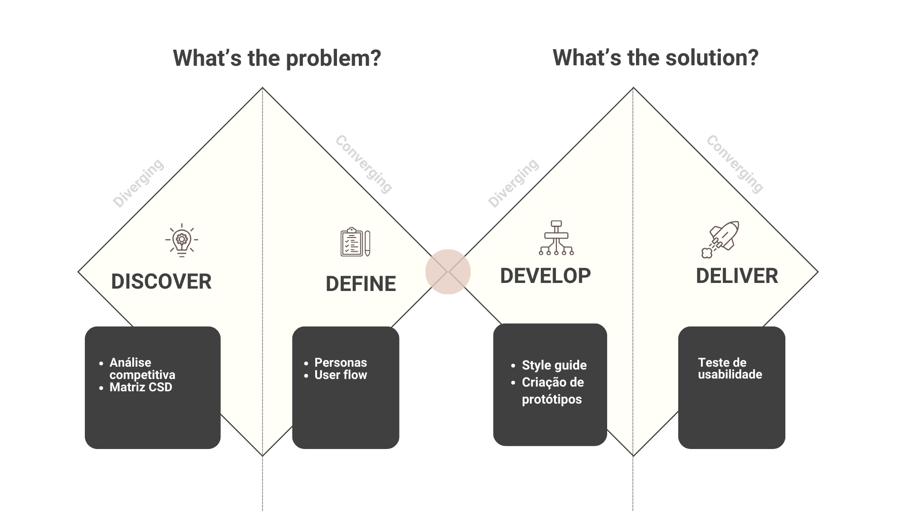
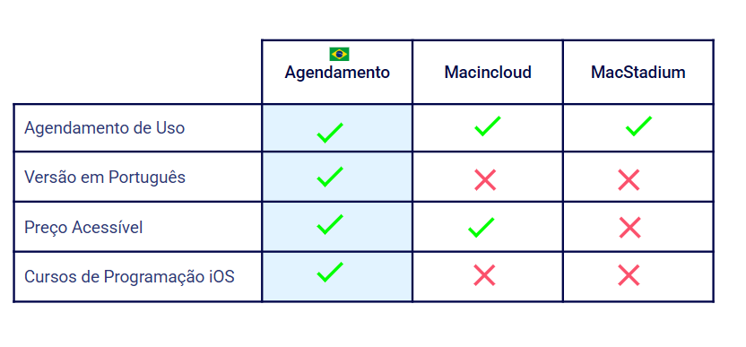
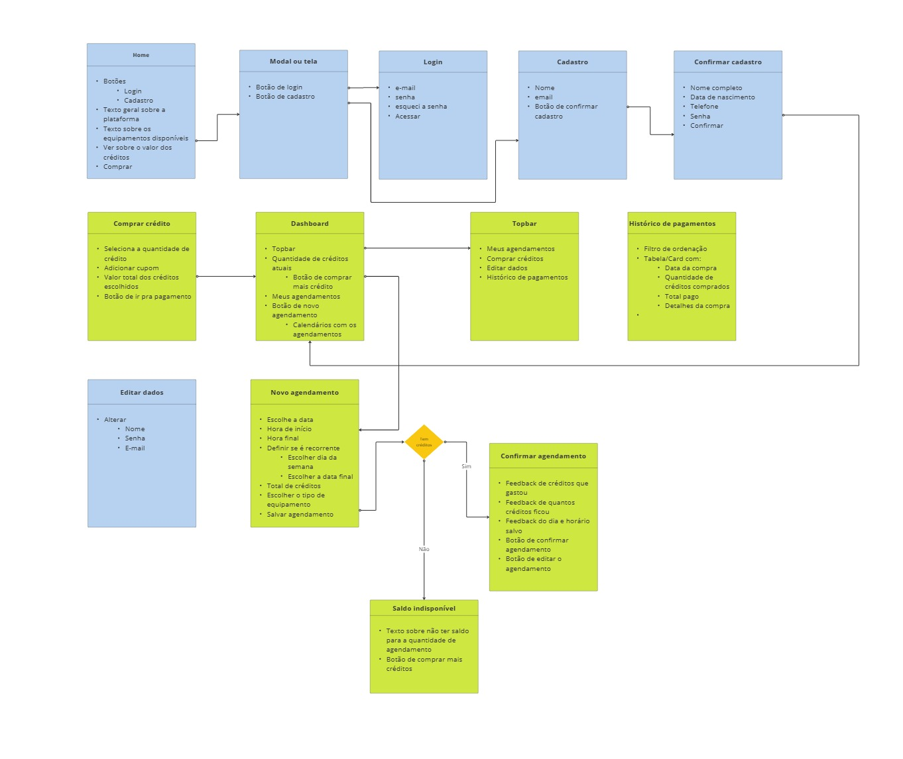
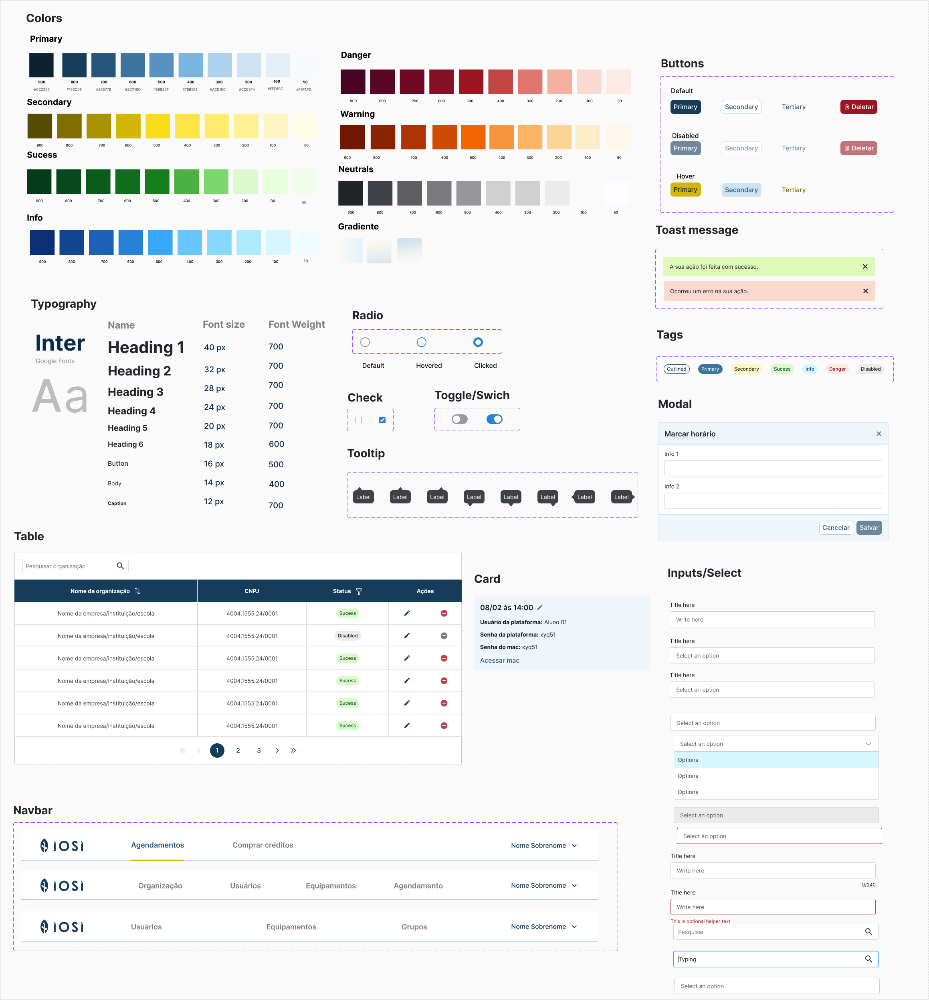

Contexto geral
O projeto foi realizado na empresa Irede e consiste em um sistema de acesso remoto a Macs, permitindo que alunos adquiram horas para praticar programação iOS de forma acessível, sem a necessidade de um Mac próprio. Aqui apresentarei uma visão geral do processo de UX que foi realizado nesse sistema.
Processo de UX
Nesse projeto foi seguido a abordagem do Double Diamond e em que cada etapa foi usado os métodos informados na imagem abaixo:
Análise Competitiva
Foram analisadas plataformas similares, como MacinCloud, para entender pontos fortes e oportunidades de diferenciação. Essa pesquisa destacou a ausência de uma solução semelhante no Brasil, posicionando o projeto como pioneiro no mercado nacional.
Matriz CSD
A Matriz CSD foi essencial para estruturar insights coletados em conversas com stakeholders e Product Owner. Esse processo ajudou a alinhar expectativas, identificar desafios e definir prioridades estratégicas para a solução.

Personas
A criação de personas permitiu entender as necessidades, dores e motivações dos usuários, garantindo que a solução fosse adaptada ao público-alvo, como estudantes de programação iOS e desenvolvedores iniciantes.
User Flow
Mapear o fluxo do usuário ajudou a simplificar a jornada de compra e acesso aos Macs remotos, garantindo uma experiência intuitiva e eficiente desde o primeiro contato até a utilização do serviço.
Style Guide
O Style Guide garantiu consistência visual e usabilidade, padronizando cores, tipografia e componentes. Isso facilitou a colaboração e otimizou o desenvolvimento.
Protótipo
A entrega de interfaces em alta fidelidade, aliada a um handoff bem estruturado, garantiu uma transição fluida para o time de desenvolvimento, reduzindo retrabalho e assegurando que a implementação mantivesse a qualidade do design.

Teste de usabilidade
O teste foi realizado com cinco usuários, que executaram as principais tarefas da plataforma. Apesar de todas as tarefas terem sido concluídas, alguns usuários enfrentaram dificuldades em certos pontos. Além disso, utilizamos a metodologia MaxCard, onde os participantes descreveram suas emoções durante o uso por meio de cards, proporcionando insights valiosos sobre a experiência. Com base nesses feedbacks, ajustamos a interface para reduzir os obstáculos identificados. O próximo passo será validar essas melhorias com novos testes. Abaixo tem imagens de mais detalhes dos testes

Reflexões
A plataforma tornou o acesso ao desenvolvimento iOS mais acessível, eliminando a necessidade de um Mac próprio. Com um design intuitivo e aprovado em testes de usabilidade, facilitou a experiência dos usuários, ampliando a inclusão e a capacitação na área. Como próximos passos, implementar a funcionalidade de cursos de IOS na plataforma e possíveis outras funcionalidades, fazer novos testes de usabilidade para comprovar a eficiência da aplicação.